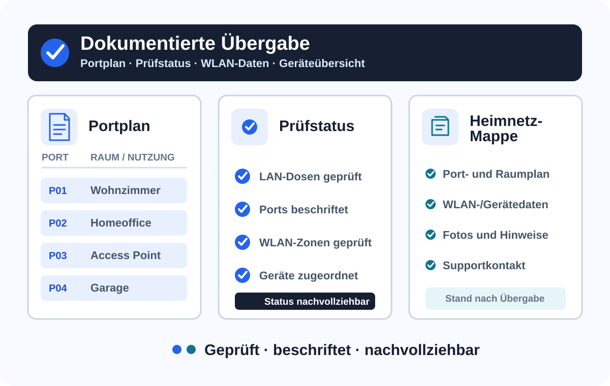

Neubau & Sanierung
Heimnetz früh planen, mit dem Elektriker abstimmen und nach der Kabelverlegung sauber in Betrieb nehmen.

Wien · Niederösterreich · Burgenland
Stabiles LAN und WLAN für Eigentümer, Familien und kleine Betriebe. Beratung & Technik verbindet Glasfaser, LAN-Dosen, Netzwerkschrank, Router und Access Points – inklusive Messung und Dokumentation.
Der Elektriker verlegt die Leitungen – Beratung & Technik macht daraus ein funktionierendes Heimnetz.
Typische Situation
Genau hier setzt Beratung & Technik an: zwischen Elektriker, Internetanbieter, Router, Netzwerkschrank, HomeWay-Dosen und WLAN.
Heimnetz früh planen, mit dem Elektriker abstimmen und nach der Kabelverlegung sauber in Betrieb nehmen.
Dosen prüfen, Leitungen zuordnen, Patchpanel/Switch verbinden und verständlich beschriften.
Repeater ersetzen, Access Points sinnvoll platzieren und über LAN oder PoE stabil anbinden.
LAN und WLAN für Empfang, Behandlungs- oder Besprechungsräume, Drucker, Gäste-WLAN und kleine Teams sauber aufsetzen.
Was Sie bekommen
Das Heimnetz soll im Alltag verschwinden: Internet funktioniert in den Räumen, der Verteiler ist nachvollziehbar aufgebaut und die Übergabe bleibt dokumentiert.
Im Alltag bleibt die Technik geschlossen und unauffällig; für Service und Erweiterungen ist sie sauber zugänglich.

Portplan, WLAN-Daten, Mess-/Prüfergebnis und Hinweise bleiben nach der Inbetriebnahme nachvollziehbar.

Grundriss, Dosen, Verteiler, Access Points, Garage, Garten und Provider-Anschluss werden vorab sauber eingeordnet.
Leistungen
Internet in jedem Raum für Haus, Wohnung, Neubau und Sanierung.
Patchpanel, Switch, Router, ONT, PoE, Kabelmanagement und Dokumentation.
Access Points statt Repeater-Chaos für Homeoffice, Streaming, Gaming und Garten.
Modulare Anschlusslösungen für Netzwerk, TV, Glasfaser und dezente Access Points.
Speziallösungen
Doorbell, Kameras, Garage, Garten, UniFi, Omada oder kleine Office-/Praxis-Netzwerke werden nicht als Insellösung geplant, sondern sauber in LAN, WLAN, PoE und Netzwerkschrank integriert.
Decken-, Wand- oder Unterputz-nahe Access Points statt Repeater-Chaos.
Stabile Netzwerkbasis für smarte Türklingel, Kameras, Eingang, Einfahrt und PoE-Switch.
WLAN und Netzwerk für Garage, Gartenhaus, Wallbox, PV, Tor, Kamera und Außenbereiche.
Gateway, Switch, PoE, Access Points und Protect optional als durchgängiges System.
Preis-Leistungs-Alternative für Haus, Wohnung, kleines Büro, Praxis oder Kanzlei.
LAN, WLAN, Gäste-WLAN, Drucker, NAS und Dokumentation für kleine Teams.
Klare Schnittstelle
Die Abgrenzung ist bewusst klar, damit Bauherr, Elektriker und Beratung & Technik ohne Reibungsverluste zusammenarbeiten.
Senden Sie einige Eckdaten, zwei bis vier Fotos oder einen Grundriss. Sie erhalten eine erste Einordnung, ob ein CONNECT CHECK vor Ort sinnvoll ist.